@c6reviews.
@c6reviews.Star Trek
home
| Universe Timeline | ||
|---|---|---|
| 2292 | ||
| 2293 | 🎥VI: The Undiscovered Country | |
| 2294 | ||
| [28 years] | ||
| 2323 | ||
| 2324 | 🎥Section 31 (#14) | |
| 2325 | ||
| 2326 | ||
| 2327 | << TNG: Tapestry | Picard's bar fight (Age 22) |
| 2328 | ||
| [34 years] | ||
| 2363 | ||
| 2364 | 📺 Star Trek The Next Generation (TNG) ↓ |
|
| 2365 | ||
| 2366 | ||

! SPOILERS AHEAD !
Listen, I went into this movie knowing that it was trying to reach a broader audience and not just appeal to the existing Star Trek fan base. That's perfectly fine! But to leave the film bereft of anything to do with Star Trek (besides a name or phrase here or there) is really doing the franchise a disservice. This is the 14th film to bear the Star Trek name. Let's get into it.
👎 Section 31 - Let's start with the thing that the movie is named after. Section 31 is supposed to be a mysterious black-ops intelligence group that operates in the shadows. Despite the title, this film really doesn't have anything to do with Section 31. We don't learn anything new about the organization, because the movie isn't about the organization. Section 31 could have easily been swapped out for any other outfit, or even just a group of mercenaries who didn't want their planets to get blown up. In fact, I think the latter would have made more sense than what we got. I think you'll find that there are a lot of elements to this film that could have easily been swapped out for other elements, because everything about it is so generic.
👎Alpha Team - Oh, please. "Alpha Team" connotes some sort of elite status, like the best of the best. Instead, this is a rag-tag group of misfits who are embarrassingly inept. The film would have been better served if they had just leaned into the comedy and TOLD the audience that they weren't taking this seriously. You know, have a quick sequence at the beginning that explains that all the elite teams were unavailable, so they had to settle for "Upsilon Team," named after the silliest letter of the Greek alphabet because the team is so pathetically bad at their jobs.
👍Michelle Yeoh - She is delightful as Emperor Georgiou. We love Michelle, but even she can't make up for the rest of this film.
👎MacGuffin Box - Why does it seem like so many Star Trek stories lately all have to have MacGuffin boxes? There always seems to be some intricately-designed thing to center the story around. This time it's just a big bomb, but look at all the little pretty details on it!
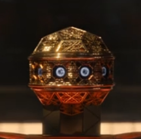
👎The "Lost Era" - This film takes place in 2324, which is in the middle of what some people call Star Trek's "lost era" -- the unexplored gap between The Undiscovered Country (the last film featuring the Original Series cast) and The Next Generation. Why does it take place in this era? No reason, really. It could have just as easily been any other era. It's another element that seems to have been chosen arbitrarily, because we don't learn anything particularly special about this time. It certainly doesn't fill in any of the gaps between the Kirk and Picard eras.👎Rachel Garrett - "We need a character the fans will recognize so we can call it Star Trek!" Once again, this element could have easily been any other character. There doesn't feel like there's any particular reason for Garrett to be there; it's just another arbitrary choice in a sea of arbitrary choices. And we certainly don't come out of the movie thinking, "Wow, that really added a rich backstory to Rachel Garrett's character!" Nope. She was just there to say really cringe-worthy lines like "Chaos is my friend with benefits." Think about it: if Garrett hadn't been in this movie - if her character were just entirely absent - the movie would have been the same. She doesn't add anything to the film, she was only thrown in to have some very weak tie back to Starfleet and, by extension, Star Trek.
👍Young Georgiou - Speaking of backstories, the flashbacks to Georgiou's youth were one of the few welcome elements in this movie. They actually did add some interesting color to Georgiou's motivations.
👎Meathead - I knew from the moment I saw Zeph (the big dumb man in the big dumb mech suit) in the trailer for this film, that the character was just going to be a mindless meathead that smashes things. And that's what he was.
👎Cameo - WHY IS THE ACTIVIA LADY IN THIS MOVIE
👍It takes place in space - They got the setting right.
👎Section 31 (again) - This movie really ruins the dark, serious mystery surrounding the organization known as Section 31. It makes light of the organization, and it feels nothing like the group that Luther Sloan was a part of. Sloan is probably spinning in his grave having to endure this joke of a team.
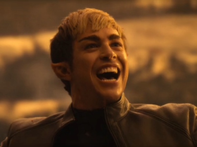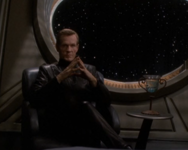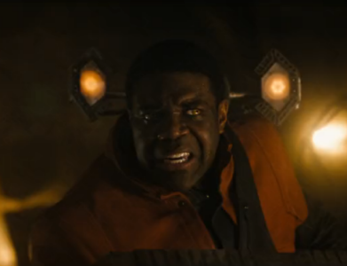 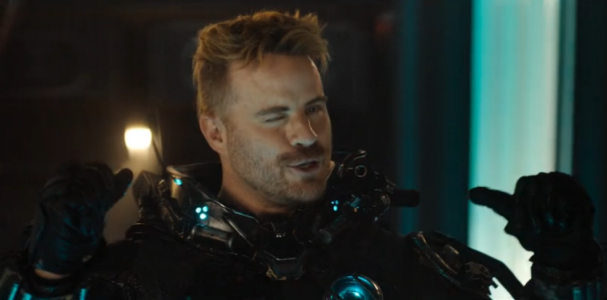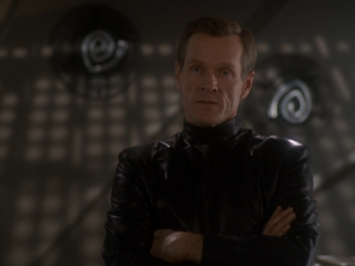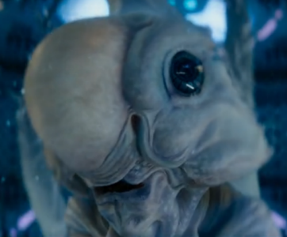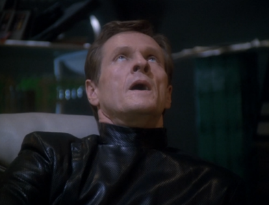
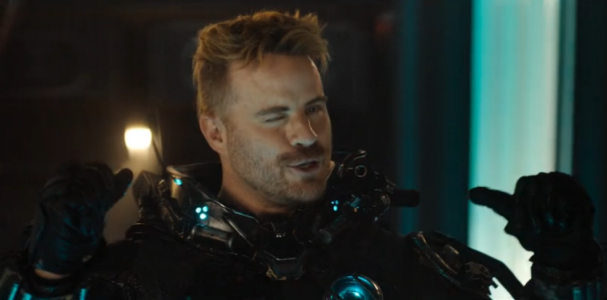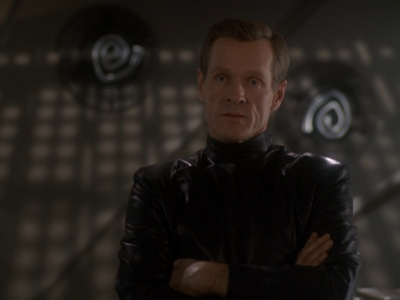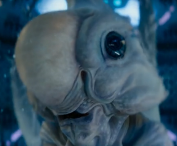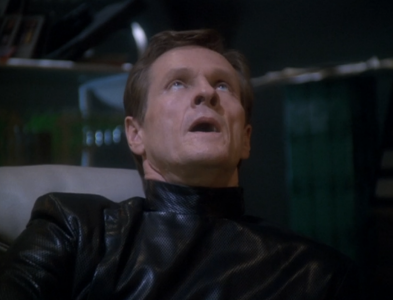
If this movie didn't have "Star Trek" branding on it, I might rate it slightly higher, but don't misunderstand that it's still just okay. With the Star Trek name attached, I expect more... you know... Trek. I say on my ABOUT page that I don't have any hard and fast rules about what Trek "should" or "shouldn't" be, and I mean that. I'm okay with the events of this movie being a part of the Star Trek universe - but it is just lacking a real connection to the actual Trek franchise. With a few changes to the script, this could have been any sci-fi series.
I'd rather watch Star Trek V.